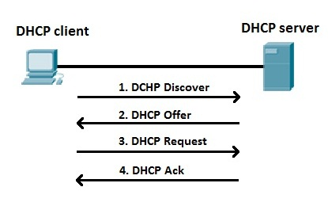

A DHCP (Dynamic Host Configuration Protocol) egy olyan hálózati protokoll, amely automatikusan kiosztja a hálózathoz csatlakozó eszközök számára a szükséges hálózati beállításokat.
Ilyen beállítás például az IP-cím, az alhálózati maszk, az alapértelmezett átjáró és a DNS-szerver címe.
DHCP nélkül a hálózathoz csatlakozó számítógépeken és más eszközökön kézzel kellene beállítani az IP-címet és a többi hálózati adatot. Nagyobb hálózatok esetén ez sok időt és munkát jelentene.
A DHCP ezt automatikusan elvégzi, így egyszerűbbé válik a hálózat beállítása és kezelése.
Amikor egy eszköz csatlakozik a hálózathoz, még nincs saját IP-címe. A DHCP-szerver segítségével kérhet és kaphat egy használható IP-címet.
A folyamat négy fő lépésből áll:

Tegyük fel, hogy egy laptop csatlakozik az otthoni Wi-Fi hálózathoz. A laptopnak szüksége van egy IP-címre ahhoz, hogy kommunikálni tudjon a hálózat többi eszközével és az internettel.
A routerben található DHCP-szerver például a 192.168.1.100 IP-címet adhatja a laptopnak. Emellett megadhatja az alhálózati maszkot, az alapértelmezett átjárót és a DNS-szervert is.
A DHCP általában egy meghatározott IP-címtartományból osztja ki a címeket. Ezt a tartományt DHCP-poolnak nevezzük.
Például:
A DHCP által kiosztott IP-cím általában nem véglegesen kerül az eszközhöz. A címhez egy úgynevezett bérleti idő, vagyis lease time tartozik.
A bérleti idő lejárta előtt az eszköz megpróbálhatja megújítani az IP-cím használatát. Így az IP-címek hatékonyan újra felhasználhatók.
A DHCP-t szinte minden modern számítógépes hálózatban használják. Otthoni hálózatokban általában a router működik DHCP-szerverként. Amikor egy telefon, laptop vagy más eszköz csatlakozik a Wi-Fi-hez, a router automatikusan kiosztja számára a szükséges hálózati adatokat.
A DHCP egy fontos hálózati protokoll, amely megkönnyíti az eszközök hálózati konfigurációját. Automatikusan IP-címet és egyéb hálózati beállításokat biztosít az eszközök számára.
A DHCP működésének négy fő lépése a Discover, Offer, Request és ACK. Ennek köszönhetően a felhasználónak általában nem kell kézzel beállítania az IP-címet, amikor egy eszközt csatlakoztat a hálózathoz.